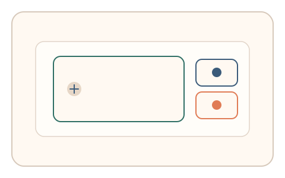
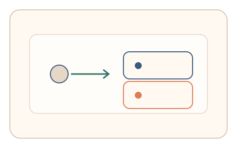
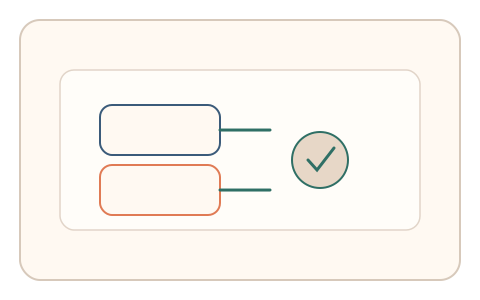

#P1
Foundational Principles
已扩展
普适可达
把低门槛与等效替代通道作为验证机制的安全约束，确保多数真实用户可快速通过。
概念原文
验证机制必须让绝大多数真实用户在低门槛、低成本下快速通过，并为特殊群体提供等效替代路径，以降低误拒带来的流失与不公平。
把“通用性”作为安全逻辑的硬约束，而非仅体验优化。
研究背景
验证码一旦对真实用户设置过高门槛，会显著放大误拒与流失。可达性设计强调不同能力与设备条件下的可用性与公平性，因此应将通用性视为安全体系的一部分，而不仅是体验优化。
核心机制
- 选择低负担的感知或动作任务，降低认知与体力成本。
- 提供等效替代通道（键盘/简化模式/辅助提示）并保持安全强度一致。
- 根据设备与环境自适应阈值，允许合理的误差区间与重试。
- 持续记录完成时间与失败模式，作为阈值与任务复杂度的校准依据。
用户流程
- 步骤 1：用户看到主任务及可达性入口。
- 步骤 2：用户完成主任务或选择替代通道完成验证。
- 步骤 3：系统以一致的安全标准判定并输出结果。
判定信号
完成时间与纠错次数
可达性不足会导致异常耗时与高纠错率。
替代通道使用率与成功率
反映不同用户群体的可达性需求与任务门槛。
判定逻辑
主通道或替代通道满足人类基线分布即可通过；对异常低成本或异常一致的行为进行额外校验。
对抗面
- 攻击者利用最弱通道绕过主任务
- 脚本模拟低负担流程进行批量通过
防御与缓解
- 各通道共用核心行为信号，避免安全强度割裂
- 风险分级：高风险场景要求更强信号或多通道验证
- 持续监控替代通道的通过率与异常分布
可达性与风险
提供键盘可操作、慢速模式与辅助提示，支持屏幕阅读器与高对比显示，确保特殊群体有等效通道。
- 替代通道成为攻击者优先选择的弱点
- 过度简化导致区分度下降
可视化状态

状态 1：多通道入口
主任务与可达性入口并列呈现。

状态 2：替代通道
用户选择等效替代方式完成验证。

状态 3：一致判定
不同通道均以一致标准判定。
参考资料
Web Content Accessibility Guidelines (WCAG) 2.1
说明可达性要求与设计约束。
Inclusive design
说明面向多样化能力的通用设计原则。